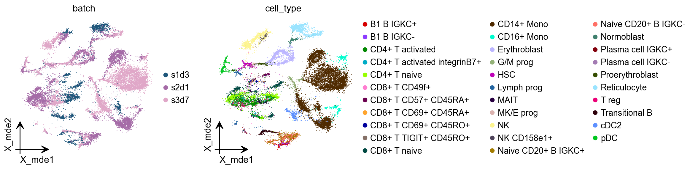
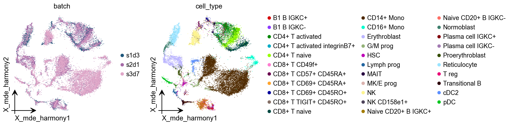
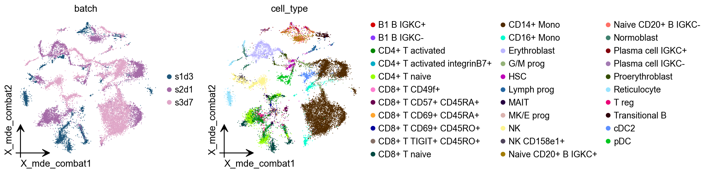
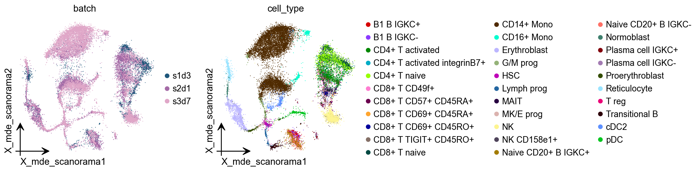
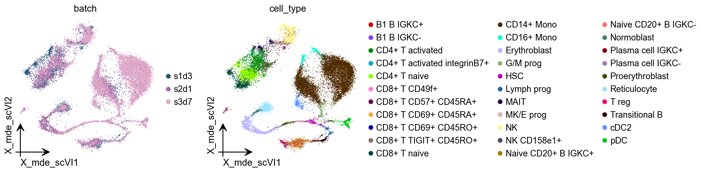
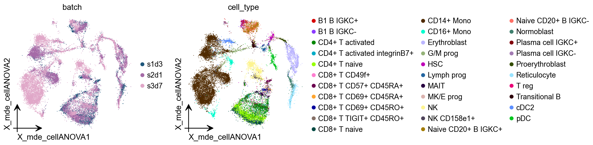
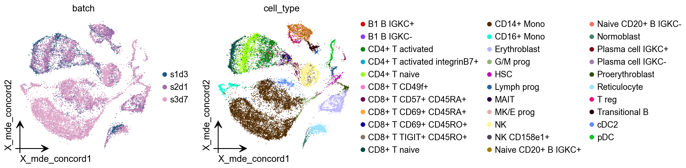
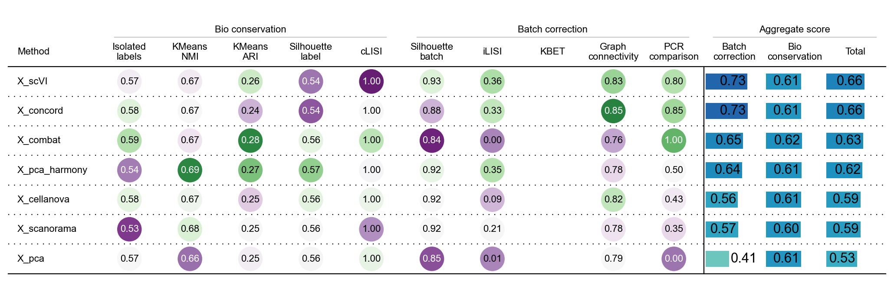

Data integration and batch correction#
An important task of single-cell analysis is the integration of several samples, which we can perform with omicverse.
Here we demonstrate how to merge data using omicverse and perform a corrective analysis for batch effects. We provide a total of 4 methods for batch effect correction in omicverse, including harmony, scanorama and combat which do not require GPU. if available, we recommend using GPU-based scVI ,scANVI and CONCORD to get the best batch effect correction results.
import omicverse as ov
#print(f"omicverse version: {ov.__version__}")
import scanpy as sc
#print(f"scanpy version: {sc.__version__}")
ov.style(font_path='Arial')
%load_ext autoreload
%autoreload 2
🔬 Starting plot initialization...
Using already downloaded Arial font from: /tmp/omicverse_arial.ttf
Registered as: Arial
🧬 Detecting GPU devices…
✅ NVIDIA CUDA GPUs detected: 1
• [CUDA 0] NVIDIA H100 80GB HBM3
Memory: 79.1 GB | Compute: 9.0
____ _ _ __
/ __ \____ ___ (_)___| | / /__ _____________
/ / / / __ `__ \/ / ___/ | / / _ \/ ___/ ___/ _ \
/ /_/ / / / / / / / /__ | |/ / __/ / (__ ) __/
\____/_/ /_/ /_/_/\___/ |___/\___/_/ /____/\___/
🔖 Version: 1.7.9rc1 📚 Tutorials: https://omicverse.readthedocs.io/
✅ plot_set complete.
Data integration#
First, we need to concat the data of scRNA-seq from different batch. We can use sc.concat to perform it。
The dataset we will use to demonstrate data integration contains several samples of bone marrow mononuclear cells. These samples were originally created for the Open Problems in Single-Cell Analysis NeurIPS Competition 2021.
We selected sample of s1d3, s2d1 and s3d7 to perform integrate. The individual data can be downloaded from figshare.
adata1=ov.datasets.get_adata('https://figshare.com/ndownloader/files/41932005',
'neurips2021_s1d3.h5ad')
adata1.obs['batch']='s1d3'
adata2=ov.datasets.get_adata('https://figshare.com/ndownloader/files/41932011',
'neurips2021_s2d1.h5ad')
adata2.obs['batch']='s2d1'
adata3=ov.datasets.get_adata('https://figshare.com/ndownloader/files/41932008',
'neurips2021_s3d7.h5ad')
adata3.obs['batch']='s3d7'
🔍 Downloading data to ./data/neurips2021_s1d3.h5ad
⚠️ File ./data/neurips2021_s1d3.h5ad already exists
Loading data from ./data/neurips2021_s1d3.h5ad
✅ Successfully loaded: 5935 cells × 13953 genes
🔍 Downloading data to ./data/neurips2021_s2d1.h5ad
⚠️ File ./data/neurips2021_s2d1.h5ad already exists
Loading data from ./data/neurips2021_s2d1.h5ad
✅ Successfully loaded: 10258 cells × 13953 genes
🔍 Downloading data to ./data/neurips2021_s3d7.h5ad
⚠️ File ./data/neurips2021_s3d7.h5ad already exists
Loading data from ./data/neurips2021_s3d7.h5ad
✅ Successfully loaded: 11230 cells × 13953 genes
adata=sc.concat([adata1,adata2,adata3],merge='same')
adata
AnnData object with n_obs × n_vars = 27423 × 13953
obs: 'GEX_n_genes_by_counts', 'GEX_pct_counts_mt', 'GEX_size_factors', 'GEX_phase', 'ADT_n_antibodies_by_counts', 'ADT_total_counts', 'ADT_iso_count', 'cell_type', 'batch', 'ADT_pseudotime_order', 'GEX_pseudotime_order', 'Samplename', 'Site', 'DonorNumber', 'Modality', 'VendorLot', 'DonorID', 'DonorAge', 'DonorBMI', 'DonorBloodType', 'DonorRace', 'Ethnicity', 'DonorGender', 'QCMeds', 'DonorSmoker', 'is_train'
var: 'feature_types', 'gene_id'
obsm: 'ADT_X_pca', 'ADT_X_umap', 'ADT_isotype_controls', 'GEX_X_pca', 'GEX_X_umap'
layers: 'counts'
We can see that there are now three elements in the batch
adata.obs['batch'].unique()
array(['s1d3', 's2d1', 's3d7'], dtype=object)
import numpy as np
adata.X=adata.X.astype(np.int64)
Data preprocess and Batch visualize#
We first performed quality control of the data and normalisation with screening for highly variable genes. Then visualise potential batch effects in the data.
Here, we can set batch_key=batch to correct the doublet detectation and Highly variable genes identifcation.
adata=ov.pp.qc(adata,
tresh={'mito_perc': 0.2, 'nUMIs': 500, 'detected_genes': 250},
batch_key='batch')
adata
🖥️ Using CPU mode for QC...
📊 Step 1: Calculating QC Metrics
✓ Gene Family Detection:
┌──────────────────────────────┬────────────────────┬────────────────────┐
│ Gene Family │ Genes Found │ Detection Method │
├──────────────────────────────┼────────────────────┼────────────────────┤
│ Mitochondrial │ 13 │ Auto (MT-) │
├──────────────────────────────┼────────────────────┼────────────────────┤
│ Ribosomal │ 94 │ Auto (RPS/RPL) │
├──────────────────────────────┼────────────────────┼────────────────────┤
│ Hemoglobin │ 11 │ Auto (regex) │
└──────────────────────────────┴────────────────────┴────────────────────┘
✓ QC Metrics Summary:
┌─────────────────────────┬────────────────────┬─────────────────────────┐
│ Metric │ Mean │ Range (Min - Max) │
├─────────────────────────┼────────────────────┼─────────────────────────┤
│ nUMIs │ 19926 │ 999 - 694009 │
├─────────────────────────┼────────────────────┼─────────────────────────┤
│ Detected Genes │ 1339 │ 103 - 5543 │
├─────────────────────────┼────────────────────┼─────────────────────────┤
│ Mitochondrial % │ 8.0% │ 0.0% - 33.1% │
├─────────────────────────┼────────────────────┼─────────────────────────┤
│ Ribosomal % │ 28.6% │ 0.1% - 75.0% │
├─────────────────────────┼────────────────────┼─────────────────────────┤
│ Hemoglobin % │ 10.1% │ 0.0% - 96.1% │
└─────────────────────────┴────────────────────┴─────────────────────────┘
📈 Original cell count: 27,423
🔧 Step 2: Quality Filtering (SEURAT)
Thresholds: mito≤0.2, nUMIs≥500, genes≥250
📊 Seurat Filter Results:
• nUMIs filter (≥500): 0 cells failed (0.0%)
• Genes filter (≥250): 420 cells failed (1.5%)
• Mitochondrial filter (≤0.2): 285 cells failed (1.0%)
✓ Filters applied successfully
✓ Combined QC filters: 705 cells removed (2.6%)
🎯 Step 3: Final Filtering
Parameters: min_genes=200, min_cells=3
Ratios: max_genes_ratio=1, max_cells_ratio=1
✓ Final filtering: 0 cells, 0 genes removed
🔍 Step 4: Doublet Detection
⚠️ Note: 'scrublet' detection is too old and may not work properly
💡 Consider using 'doublets_method=sccomposite' for better results
🔍 Running scrublet doublet detection...
🔍 Running Scrublet Doublet Detection:
Mode: cpu
Computing doublet prediction using Scrublet algorithm
🔍 Filtering genes and cells...
filtered out 118 genes that are detected in less than 3 cells
🔍 Normalizing data and selecting highly variable genes...
🔍 Count Normalization:
Target sum: median
Exclude highly expressed: False
✅ Count Normalization Completed Successfully!
✓ Processed: 5,903 cells × 13,835 genes
✓ Runtime: 0.10s
🔍 Highly Variable Genes Selection:
Method: seurat
⚠️ Gene indices [7159 7479 9787] fell into a single bin: normalized dispersion set to 1
💡 Consider decreasing `n_bins` to avoid this effect
✅ HVG Selection Completed Successfully!
✓ Selected: 1,918 highly variable genes out of 13,835 total (13.9%)
✓ Results added to AnnData object:
• 'highly_variable': Boolean vector (adata.var)
• 'means': Float vector (adata.var)
• 'dispersions': Float vector (adata.var)
• 'dispersions_norm': Float vector (adata.var)
🔍 Simulating synthetic doublets...
🔍 Normalizing observed and simulated data...
🔍 Count Normalization:
Target sum: 1000000.0
Exclude highly expressed: False
✅ Count Normalization Completed Successfully!
✓ Processed: 5,903 cells × 1,918 genes
✓ Runtime: 0.01s
🔍 Count Normalization:
Target sum: 1000000.0
Exclude highly expressed: False
✅ Count Normalization Completed Successfully!
✓ Processed: 11,806 cells × 1,918 genes
✓ Runtime: 0.20s
🔍 Embedding transcriptomes using PCA...
🔍 Calculating doublet scores...
using data matrix X directly
🔍 Calling doublets with threshold detection...
📊 Automatic threshold: 0.535
📈 Detected doublet rate: 0.0%
🔍 Detectable doublet fraction: 11.4%
📊 Overall doublet rate comparison:
• Expected: 5.0%
• Estimated: 0.0%
🔍 Filtering genes and cells...
filtered out 29 genes that are detected in less than 3 cells
🔍 Normalizing data and selecting highly variable genes...
🔍 Count Normalization:
Target sum: median
Exclude highly expressed: False
✅ Count Normalization Completed Successfully!
✓ Processed: 9,905 cells × 13,924 genes
✓ Runtime: 0.13s
🔍 Highly Variable Genes Selection:
Method: seurat
⚠️ Gene indices [7210 7534] fell into a single bin: normalized dispersion set to 1
💡 Consider decreasing `n_bins` to avoid this effect
✅ HVG Selection Completed Successfully!
✓ Selected: 2,005 highly variable genes out of 13,924 total (14.4%)
✓ Results added to AnnData object:
• 'highly_variable': Boolean vector (adata.var)
• 'means': Float vector (adata.var)
• 'dispersions': Float vector (adata.var)
• 'dispersions_norm': Float vector (adata.var)
🔍 Simulating synthetic doublets...
🔍 Normalizing observed and simulated data...
🔍 Count Normalization:
Target sum: 1000000.0
Exclude highly expressed: False
✅ Count Normalization Completed Successfully!
✓ Processed: 9,905 cells × 2,005 genes
✓ Runtime: 0.01s
🔍 Count Normalization:
Target sum: 1000000.0
Exclude highly expressed: False
✅ Count Normalization Completed Successfully!
✓ Processed: 19,810 cells × 2,005 genes
✓ Runtime: 0.30s
🔍 Embedding transcriptomes using PCA...
🔍 Calculating doublet scores...
using data matrix X directly
🔍 Calling doublets with threshold detection...
📊 Automatic threshold: 0.502
📈 Detected doublet rate: 0.0%
🔍 Detectable doublet fraction: 38.8%
📊 Overall doublet rate comparison:
• Expected: 5.0%
• Estimated: 0.0%
🔍 Filtering genes and cells...
filtered out 13 genes that are detected in less than 3 cells
🔍 Normalizing data and selecting highly variable genes...
🔍 Count Normalization:
Target sum: median
Exclude highly expressed: False
✅ Count Normalization Completed Successfully!
✓ Processed: 10,910 cells × 13,940 genes
✓ Runtime: 0.16s
🔍 Highly Variable Genes Selection:
Method: seurat
⚠️ Gene indices [ 878 7546] fell into a single bin: normalized dispersion set to 1
💡 Consider decreasing `n_bins` to avoid this effect
✅ HVG Selection Completed Successfully!
✓ Selected: 1,445 highly variable genes out of 13,940 total (10.4%)
✓ Results added to AnnData object:
• 'highly_variable': Boolean vector (adata.var)
• 'means': Float vector (adata.var)
• 'dispersions': Float vector (adata.var)
• 'dispersions_norm': Float vector (adata.var)
🔍 Simulating synthetic doublets...
🔍 Normalizing observed and simulated data...
🔍 Count Normalization:
Target sum: 1000000.0
Exclude highly expressed: False
✅ Count Normalization Completed Successfully!
✓ Processed: 10,910 cells × 1,445 genes
✓ Runtime: 0.00s
🔍 Count Normalization:
Target sum: 1000000.0
Exclude highly expressed: False
✅ Count Normalization Completed Successfully!
✓ Processed: 21,820 cells × 1,445 genes
✓ Runtime: 0.23s
🔍 Embedding transcriptomes using PCA...
🔍 Calculating doublet scores...
using data matrix X directly
🔍 Calling doublets with threshold detection...
📊 Automatic threshold: 0.509
📈 Detected doublet rate: 0.0%
🔍 Detectable doublet fraction: 24.1%
📊 Overall doublet rate comparison:
• Expected: 5.0%
• Estimated: 0.2%
✅ Scrublet Analysis Completed Successfully!
✓ Results added to AnnData object:
• 'doublet_score': Doublet scores (adata.obs)
• 'predicted_doublet': Boolean predictions (adata.obs)
• 'scrublet': Parameters and metadata (adata.uns)
✓ Scrublet completed: 5 doublets removed (0.0%)
AnnData object with n_obs × n_vars = 26713 × 13953
obs: 'GEX_n_genes_by_counts', 'GEX_pct_counts_mt', 'GEX_size_factors', 'GEX_phase', 'ADT_n_antibodies_by_counts', 'ADT_total_counts', 'ADT_iso_count', 'cell_type', 'batch', 'ADT_pseudotime_order', 'GEX_pseudotime_order', 'Samplename', 'Site', 'DonorNumber', 'Modality', 'VendorLot', 'DonorID', 'DonorAge', 'DonorBMI', 'DonorBloodType', 'DonorRace', 'Ethnicity', 'DonorGender', 'QCMeds', 'DonorSmoker', 'is_train', 'nUMIs', 'mito_perc', 'ribo_perc', 'hb_perc', 'detected_genes', 'cell_complexity', 'passing_mt', 'passing_nUMIs', 'passing_ngenes', 'n_genes', 'doublet_score', 'predicted_doublet'
var: 'feature_types', 'gene_id', 'mt', 'ribo', 'hb', 'n_cells'
uns: 'scrublet', 'status', 'status_args', 'REFERENCE_MANU'
obsm: 'ADT_X_pca', 'ADT_X_umap', 'ADT_isotype_controls', 'GEX_X_pca', 'GEX_X_umap'
layers: 'counts'
We can store the raw counts if we need the raw counts after filtered the HVGs.
adata=ov.pp.preprocess(adata,mode='shiftlog|pearson',
n_HVGs=3000,batch_key=None)
adata
🔍 [2026-01-07 13:54:31] Running preprocessing in 'cpu' mode...
Begin robust gene identification
After filtration, 13953/13953 genes are kept.
Among 13953 genes, 13953 genes are robust.
✅ Robust gene identification completed successfully.
Begin size normalization: shiftlog and HVGs selection pearson
🔍 Count Normalization:
Target sum: 500000.0
Exclude highly expressed: True
Max fraction threshold: 0.2
⚠️ Excluding 9 highly-expressed genes from normalization computation
Excluded genes: ['IGKC', 'HBB', 'MALAT1', 'IGHA1', 'IGHM', 'HBA2', 'IGLC1', 'IGLC2', 'IGLC3']
✅ Count Normalization Completed Successfully!
✓ Processed: 27,423 cells × 13,953 genes
✓ Runtime: 2.37s
🔍 Highly Variable Genes Selection (Experimental):
Method: pearson_residuals
Target genes: 3,000
Theta (overdispersion): 100
✅ Experimental HVG Selection Completed Successfully!
✓ Selected: 3,000 highly variable genes out of 13,953 total (21.5%)
✓ Results added to AnnData object:
• 'highly_variable': Boolean vector (adata.var)
• 'highly_variable_rank': Float vector (adata.var)
• 'highly_variable_nbatches': Int vector (adata.var)
• 'highly_variable_intersection': Boolean vector (adata.var)
• 'means': Float vector (adata.var)
• 'variances': Float vector (adata.var)
• 'residual_variances': Float vector (adata.var)
Time to analyze data in cpu: 6.18 seconds.
computing PCA
with n_comps=50
finished (0:00:09)
✅ Preprocessing completed successfully.
Added:
'highly_variable_features', boolean vector (adata.var)
'means', float vector (adata.var)
'variances', float vector (adata.var)
'residual_variances', float vector (adata.var)
'counts', raw counts layer (adata.layers)
End of size normalization: shiftlog and HVGs selection pearson
AnnData object with n_obs × n_vars = 27423 × 13953
obs: 'GEX_n_genes_by_counts', 'GEX_pct_counts_mt', 'GEX_size_factors', 'GEX_phase', 'ADT_n_antibodies_by_counts', 'ADT_total_counts', 'ADT_iso_count', 'cell_type', 'batch', 'ADT_pseudotime_order', 'GEX_pseudotime_order', 'Samplename', 'Site', 'DonorNumber', 'Modality', 'VendorLot', 'DonorID', 'DonorAge', 'DonorBMI', 'DonorBloodType', 'DonorRace', 'Ethnicity', 'DonorGender', 'QCMeds', 'DonorSmoker', 'is_train'
var: 'feature_types', 'gene_id', 'n_cells', 'percent_cells', 'robust', 'highly_variable_features', 'means', 'variances', 'residual_variances', 'highly_variable_rank', 'highly_variable'
uns: 'log1p', 'hvg', 'pca', 'status', 'status_args', 'REFERENCE_MANU'
obsm: 'ADT_X_pca', 'ADT_X_umap', 'ADT_isotype_controls', 'GEX_X_pca', 'GEX_X_umap', 'X_pca'
varm: 'PCs'
layers: 'counts'
adata.raw = adata
adata = adata[:, adata.var.highly_variable_features]
adata
View of AnnData object with n_obs × n_vars = 27423 × 3000
obs: 'GEX_n_genes_by_counts', 'GEX_pct_counts_mt', 'GEX_size_factors', 'GEX_phase', 'ADT_n_antibodies_by_counts', 'ADT_total_counts', 'ADT_iso_count', 'cell_type', 'batch', 'ADT_pseudotime_order', 'GEX_pseudotime_order', 'Samplename', 'Site', 'DonorNumber', 'Modality', 'VendorLot', 'DonorID', 'DonorAge', 'DonorBMI', 'DonorBloodType', 'DonorRace', 'Ethnicity', 'DonorGender', 'QCMeds', 'DonorSmoker', 'is_train'
var: 'feature_types', 'gene_id', 'n_cells', 'percent_cells', 'robust', 'highly_variable_features', 'means', 'variances', 'residual_variances', 'highly_variable_rank', 'highly_variable'
uns: 'log1p', 'hvg', 'pca', 'status', 'status_args', 'REFERENCE_MANU'
obsm: 'ADT_X_pca', 'ADT_X_umap', 'ADT_isotype_controls', 'GEX_X_pca', 'GEX_X_umap', 'X_pca'
varm: 'PCs'
layers: 'counts'
We can save the pre-processed data.
adata.write_h5ad('data/neurips2021_batch_normlog.h5ad',compression='gzip')
Similarly, we calculated PCA for HVGs and visualised potential batch effects in the data using pymde. pymde is GPU-accelerated UMAP.
ov.pp.scale(adata)
ov.pp.pca(adata,layer='scaled',n_pcs=50)
ov.pp.mde(adata,use_rep="scaled|original|X_pca")
computing PCA🔍
with n_comps=50
🖥️ Using sklearn PCA for CPU computation
🖥️ sklearn PCA backend: CPU computation
finished✅ (0:00:14)
🔍 MDE Dimensionality Reduction:
Mode: cpu
Embedding dimensions: 2
Neighbors: 15
Repulsive fraction: 0.7
Using representation: scaled|original|X_pca
Principal components: 50
Using CUDA device: NVIDIA H100 80GB HBM3
✅ TorchDR available for GPU-accelerated PCA
🔍 Computing k-nearest neighbors graph...
🔍 Creating MDE embedding...
🔍 Optimizing embedding...
✅ MDE Dimensionality Reduction Completed Successfully!
✓ Embedding shape: 27,423 cells × 2 dimensions
✓ Runtime: 4.47s
✓ Results added to AnnData object:
• 'X_mde': MDE coordinates (adata.obsm)
• 'neighbors': Neighbors metadata (adata.uns)
• 'distances': Distance matrix (adata.obsp)
• 'connectivities': Connectivity matrix (adata.obsp)
There is a very clear batch effect in the data
ov.pl.embedding(adata,
basis='X_mde',frameon='small',
color=['batch','cell_type'],show=False)
[<Axes: title={'center': 'batch'}, xlabel='X_mde1', ylabel='X_mde2'>,
<Axes: title={'center': 'cell_type'}, xlabel='X_mde1', ylabel='X_mde2'>]
{kind=link}

Harmony#
Harmony is an algorithm for performing integration of single cell genomics datasets. Please check out manuscript on Nature Methods.

The function ov.single.batch_correction can be set in three methods: harmony,combat and scanorama
ov.single.batch_correction(
adata,batch_key='batch',
methods='harmony',n_pcs=50
)
adata
...Begin using harmony to correct batch effect
Using CUDA device: NVIDIA H100 80GB HBM3
✅ TorchDR available for GPU-accelerated PCA
Omicverse mode: cpu
Detected device: cuda
🖥️ Using PyTorch CPU acceleration for Harmony
🔍 [2026-01-07 13:58:37] Running Harmony integration...
Max iterations: 10
Convergence threshold: 0.0001
✅ Harmony converged after 8 iterations
AnnData object with n_obs × n_vars = 27423 × 3000
obs: 'GEX_n_genes_by_counts', 'GEX_pct_counts_mt', 'GEX_size_factors', 'GEX_phase', 'ADT_n_antibodies_by_counts', 'ADT_total_counts', 'ADT_iso_count', 'cell_type', 'batch', 'ADT_pseudotime_order', 'GEX_pseudotime_order', 'Samplename', 'Site', 'DonorNumber', 'Modality', 'VendorLot', 'DonorID', 'DonorAge', 'DonorBMI', 'DonorBloodType', 'DonorRace', 'Ethnicity', 'DonorGender', 'QCMeds', 'DonorSmoker', 'is_train'
var: 'feature_types', 'gene_id', 'n_cells', 'percent_cells', 'robust', 'highly_variable_features', 'means', 'variances', 'residual_variances', 'highly_variable_rank', 'highly_variable'
uns: 'log1p', 'hvg', 'pca', 'status', 'status_args', 'REFERENCE_MANU', 'batch_colors_rgba', 'batch_colors', 'cell_type_colors_rgba', 'cell_type_colors', 'scaled|original|pca_var_ratios', 'scaled|original|cum_sum_eigenvalues', 'neighbors'
obsm: 'ADT_X_pca', 'ADT_X_umap', 'ADT_isotype_controls', 'GEX_X_pca', 'GEX_X_umap', 'X_pca', 'X_concord', 'X_mde_concord', 'scaled|original|X_pca', 'X_mde', 'X_pca_harmony'
varm: 'PCs', 'scaled|original|pca_loadings'
layers: 'counts', 'scaled'
obsp: 'distances', 'connectivities'
adata.obsm["X_mde_harmony"] = ov.utils.mde(adata.obsm["X_pca_harmony"])
ov.pl.embedding(
adata,
basis='X_mde_harmony',frameon='small',
color=['batch','cell_type'],show=False
)
[<Axes: title={'center': 'batch'}, xlabel='X_mde_harmony1', ylabel='X_mde_harmony2'>,
<Axes: title={'center': 'cell_type'}, xlabel='X_mde_harmony1', ylabel='X_mde_harmony2'>]
{kind=link}

Combat#
combat is a batch effect correction method that is very widely used in bulk RNA-seq, and it works just as well on single-cell sequencing data.
ov.single.batch_correction(
adata,batch_key='batch',
methods='combat',n_pcs=50
)
...Begin using combat to correct batch effect
Standardizing Data across genes.
Found 3 batches
Found 0 numerical variables:
Fitting L/S model and finding priors
Finding parametric adjustments
Adjusting data
computing PCA🔍
with n_comps=50
🖥️ Using sklearn PCA for CPU computation
🖥️ sklearn PCA backend: CPU computation
finished✅ (0:00:22)
adata.obsm["X_mde_combat"] = ov.utils.mde(adata.obsm["X_combat"])
ov.pl.embedding(
adata,
basis='X_mde_combat',frameon='small',
color=['batch','cell_type'],show=False
)
[<Axes: title={'center': 'batch'}, xlabel='X_mde_combat1', ylabel='X_mde_combat2'>,
<Axes: title={'center': 'cell_type'}, xlabel='X_mde_combat1', ylabel='X_mde_combat2'>]
{kind=link}

scanorama#
Integration of single-cell RNA sequencing (scRNA-seq) data from multiple experiments, laboratories and technologies can uncover biological insights, but current methods for scRNA-seq data integration are limited by a requirement for datasets to derive from functionally similar cells. We present Scanorama, an algorithm that identifies and merges the shared cell types among all pairs of datasets and accurately integrates heterogeneous collections of scRNA-seq data.

ov.single.batch_correction(
adata,batch_key='batch',
methods='scanorama',n_pcs=50
)
...Begin using scanorama to correct batch effect
s1d3
s2d1
s3d7
Found 3000 genes among all datasets
[[0. 0.51288964 0.56192081]
[0. 0. 0.61815169]
[0. 0. 0. ]]
Processing datasets (1, 2)
Processing datasets (0, 2)
Processing datasets (0, 1)
(27423, 50)
AnnData object with n_obs × n_vars = 27423 × 3000
obs: 'GEX_n_genes_by_counts', 'GEX_pct_counts_mt', 'GEX_size_factors', 'GEX_phase', 'ADT_n_antibodies_by_counts', 'ADT_total_counts', 'ADT_iso_count', 'cell_type', 'batch', 'ADT_pseudotime_order', 'GEX_pseudotime_order', 'Samplename', 'Site', 'DonorNumber', 'Modality', 'VendorLot', 'DonorID', 'DonorAge', 'DonorBMI', 'DonorBloodType', 'DonorRace', 'Ethnicity', 'DonorGender', 'QCMeds', 'DonorSmoker', 'is_train'
var: 'feature_types', 'gene_id', 'n_cells', 'percent_cells', 'robust', 'highly_variable_features', 'means', 'variances', 'residual_variances', 'highly_variable_rank', 'highly_variable'
uns: 'log1p', 'hvg', 'pca', 'status', 'status_args', 'REFERENCE_MANU', 'batch_colors_rgba', 'batch_colors', 'cell_type_colors_rgba', 'cell_type_colors', 'scaled|original|pca_var_ratios', 'scaled|original|cum_sum_eigenvalues', 'neighbors'
obsm: 'ADT_X_pca', 'ADT_X_umap', 'ADT_isotype_controls', 'GEX_X_pca', 'GEX_X_umap', 'X_pca', 'X_concord', 'X_mde_concord', 'scaled|original|X_pca', 'X_mde', 'X_pca_harmony', 'X_mde_harmony', 'X_combat', 'X_mde_combat', 'X_scanorama'
varm: 'PCs', 'scaled|original|pca_loadings'
layers: 'counts', 'scaled'
obsp: 'distances', 'connectivities'
adata.obsm["X_mde_scanorama"] = ov.utils.mde(adata.obsm["X_scanorama"])
ov.pl.embedding(
adata,
basis='X_mde_scanorama',frameon='small',
color=['batch','cell_type'],show=False
)
[<Axes: title={'center': 'batch'}, xlabel='X_mde_scanorama1', ylabel='X_mde_scanorama2'>,
<Axes: title={'center': 'cell_type'}, xlabel='X_mde_scanorama1', ylabel='X_mde_scanorama2'>]
{kind=link}

scVI#
An important task of single-cell analysis is the integration of several samples, which we can perform with scVI. For integration, scVI treats the data as unlabelled. When our dataset is fully labelled (perhaps in independent studies, or independent analysis pipelines), we can obtain an integration that better preserves biology using scANVI, which incorporates cell type annotation information. Here we demonstrate this functionality with an integrated analysis of cells from the lung atlas integration task from the scIB manuscript. The same pipeline would generally be used to analyze any collection of scRNA-seq datasets.
model=ov.single.batch_correction(
adata,batch_key='batch',
methods='scVI',n_layers=2, n_latent=30, gene_likelihood="nb"
)
...Begin using scVI to correct batch effect
adata.obsm["X_mde_scVI"] = ov.utils.mde(adata.obsm["X_scVI"])
ov.pl.embedding(
adata,
basis='X_mde_scVI',frameon='small',
color=['batch','cell_type'],show=False
)
[<Axes: title={'center': 'batch'}, xlabel='X_mde_scVI1', ylabel='X_mde_scVI2'>,
<Axes: title={'center': 'cell_type'}, xlabel='X_mde_scVI1', ylabel='X_mde_scVI2'>]
{kind=link}

CellANOVA#
The integration of cells across samples to remove unwanted batch variation plays a critical role in single cell analyses. When the samples are expected to be biologically distinct, it is often unclear how aggressively the cells should be aligned across samples to achieve uniformity. CellANOVA is a Python package for batch integration with signal recovery in single cell data. It builds on existing single cell data integration methods, and uses a pool of control samples to quantify the batch effect and separate meaningful biological variation from unwanted batch variation. When used with an existing integration method, CellAnova allows the recovery of biological signals that are lost during integration.
In omicverse, you only need to prepare the control_dict(At least two samples are required!) when you want to try CellANOVA. When you’re done running it, there are two outputs you need to be aware of:
the first one being:
adata.layers['denoised'], which stores the matrix after the batch effect is removed.The second is
adata.obsm['X_mde_cellANOVA'], which stores the low-dimensional representation of the cell after removing the batch effect
Zhang, Z., Mathew, D., Lim, T.L. et al. Recovery of biological signals lost in single-cell batch integration with CellANOVA. Nat Biotechnol (2024). https://doi.org/10.1038/s41587-024-02463-1
## construct control pool
control_dict = {
'pool1': ['s1d3','s2d1'],
}
ov.single.batch_correction(adata,batch_key='batch',n_pcs=50,
methods='CellANOVA',control_dict=control_dict)
...Begin using CellANOVA to correct batch effect
computing PCA
with n_comps=70
finished (0:00:08)
computing PCA🔍
with n_comps=50
🖥️ Using sklearn PCA for CPU computation
🖥️ sklearn PCA backend: CPU computation
finished✅ (0:00:50)
adata.obsm["X_mde_cellANOVA"] = ov.utils.mde(adata.obsm["X_cellanova"])
ov.pl.embedding(
adata,
basis='X_mde_cellANOVA',frameon='small',
color=['batch','cell_type'],show=False
)
[<Axes: title={'center': 'batch'}, xlabel='X_mde_cellANOVA1', ylabel='X_mde_cellANOVA2'>,
<Axes: title={'center': 'cell_type'}, xlabel='X_mde_cellANOVA1', ylabel='X_mde_cellANOVA2'>]
{kind=link}

CONCORD#
Revealing the underlying cell-state landscape from single-cell data requires overcoming the critical obstacles of batch integration, denoising and dimensionality reduction. Here we present CONCORD, a unified framework that simultaneously addresses these challenges within a single self-supervised model. At its core, CONCORD implements a probabilistic sampling strategy that corrects batch effects through dataset-aware sampling and enhances biological resolution through hard-negative sampling.
In omicverse, you only need to set the methods=’Concord’, and it will use concord to remove the batch effect automatically.
Zhu, Q., Jiang, Z., Zuckerman, B. et al. Revealing a coherent cell-state landscape across single-cell datasets with CONCORD. Nat Biotechnol (2026).
ov.single.batch_correction(
adata,batch_key='batch',
methods='Concord',device='cuda'
)
...Begin using Concord to correct batch effect
Epoch 0 Training
Epoch 1 Training
Epoch 2 Training
Epoch 3 Training
Epoch 4 Training
Epoch 5 Training
Epoch 6 Training
Epoch 7 Training
Epoch 8 Training
Epoch 9 Training
Epoch 10 Training
Epoch 11 Training
Epoch 12 Training
Epoch 13 Training
Epoch 14 Training
adata.obsm["X_mde_concord"] = ov.utils.mde(adata.obsm["X_concord"])
ov.pl.embedding(
adata,
basis='X_mde_concord',frameon='small',
color=['batch','cell_type'],show=False
)
[<Axes: title={'center': 'batch'}, xlabel='X_mde_concord1', ylabel='X_mde_concord2'>,
<Axes: title={'center': 'cell_type'}, xlabel='X_mde_concord1', ylabel='X_mde_concord2'>]
{kind=link}

Benchmarking test#
The methods demonstrated here are selected based on results from benchmarking experiments including the single-cell integration benchmarking project [Luecken et al., 2021]. This project also produced a software package called scib that can be used to run a range of integration methods as well as the metrics that were used for evaluation. In this section, we show how to use this package to evaluate the quality of an integration.
adata.write_h5ad('data/neurips2021_batch_all.h5ad',compression='gzip')
adata=ov.read('data/neurips2021_batch_all.h5ad')
adata.obsm['X_pca']=adata.obsm['scaled|original|X_pca'].copy()
from scib_metrics.benchmark import Benchmarker
bm = Benchmarker(
adata,
batch_key="batch",
label_key="cell_type",
embedding_obsm_keys=["X_pca", "X_combat", "X_pca_harmony",'X_cellanova',
'X_scanorama','X_concord','X_scVI',],
n_jobs=8,
)
bm.benchmark()
computing PCA
with n_comps=50
finished (0:00:11)
INFO 32 clusters consist of a single batch or are too small. Skip.
INFO 32 clusters consist of a single batch or are too small. Skip.
INFO 32 clusters consist of a single batch or are too small. Skip.
INFO 32 clusters consist of a single batch or are too small. Skip.
INFO 32 clusters consist of a single batch or are too small. Skip.
INFO 32 clusters consist of a single batch or are too small. Skip.
INFO 32 clusters consist of a single batch or are too small. Skip.
bm.plot_results_table(min_max_scale=False)
{kind=link}

<plottable.table.Table at 0x7fef34be9e70>
We can find that harmony removes the batch effect the best of the three methods that do not use the GPU, scVI and CONCORD is method to remove batch effect using GPU.